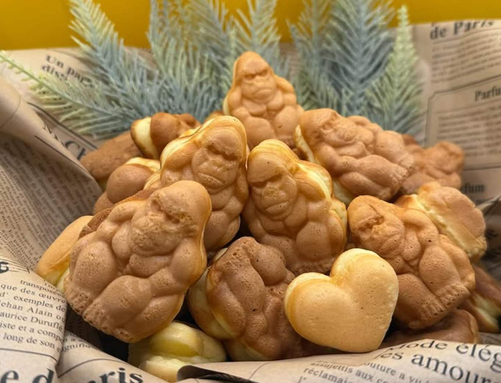
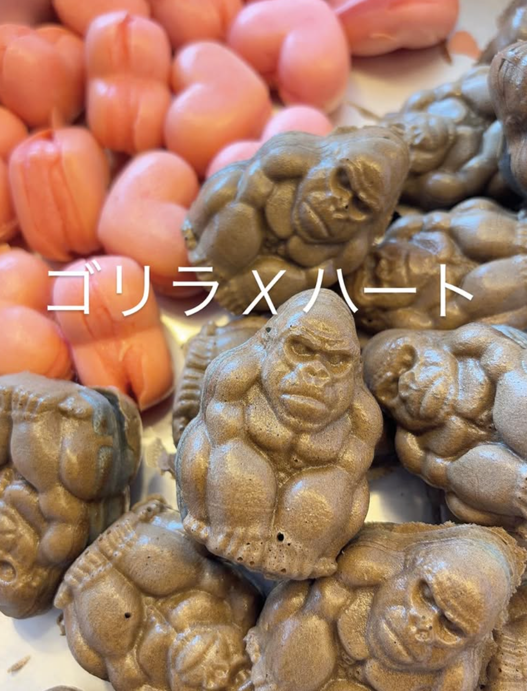
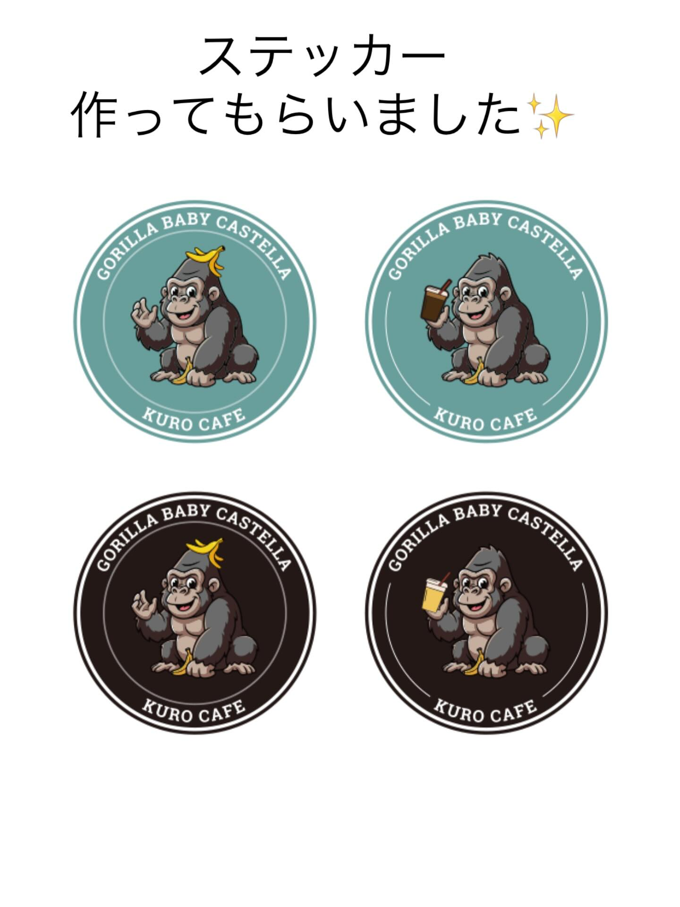
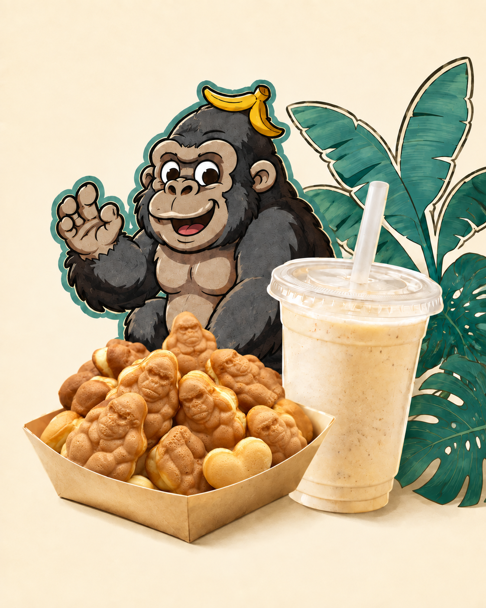
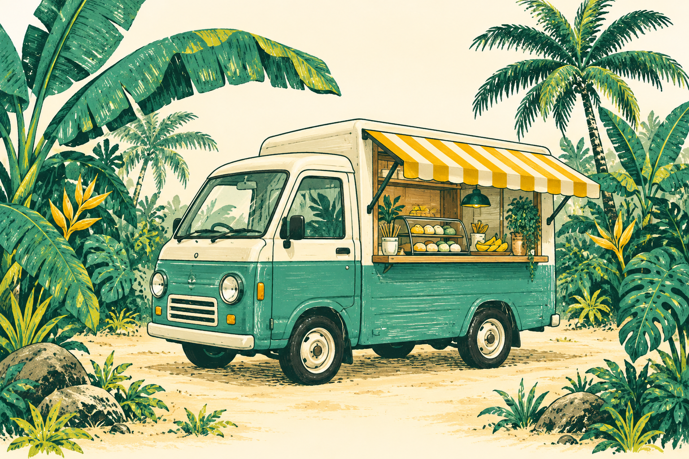

kurocafe ベビーカステラとばななスムージー 出店のご相談
ぶりゴリちゃん ベビーカステラ ばななABOUT KUROCAFE
オーナーの想い 仮原稿
ベビーカステラをひとくち、
ばななスムージーをひとくち。
いつもの場所が、ちょっと楽しい場所になる。
そんなひとときを届けたいという想いを、
この小さなキッチンカーに乗せています。
ぶりゴリちゃんと一緒に、
思わず誰かに話したくなるおやつの時間を。
※ この文章はダミーテキストです。オーナーへのヒアリング後に差し替えます。
KUROCAFE AT YOUR EVENT
メニューも、キャラクターも、楽しみのひとつに。
イベントや施設での出店について、
まずは開催場所と日程をお聞かせください。

HAVE ALET’S PLAN SOMETHING SWEET
日程・会場・イベントの内容を
Instagramからお知らせください。
出店可否、メニューや設備、
費用などの条件を確認します。
決定した内容に合わせて、
kurocafeが会場へ伺います。
検討中の内容を添えてご相談ください。候補日や会場、イベントの規模が分かると、より具体的なお話ができます。
必要な寸法や設備条件は現在確認中です。会場の設置場所・搬入経路・電源の有無をお知らせいただき、個別にご確認ください。
原材料・アレルギー情報は確認後に掲載します。ご購入・ご依頼の前に、Instagramまたは店頭でご確認ください。
開催場所を添えてInstagramからご相談ください。日程や移動条件を確認し、出店できるか個別にご案内します。
開催日・時間、会場名・住所、イベントの内容、想定来場者数、ご希望のメニューをお知らせください。ページ下部の「相談用テンプレートをコピー」もご利用いただけます。
WHERE TO MEET US
出店スケジュールや日々のお知らせは、
Instagramでご案内しています。
BRING KUROCAFE TO YOU
出店のご相談は、Instagramのメッセージへ。
開催日・会場・イベントの内容をお知らせください。